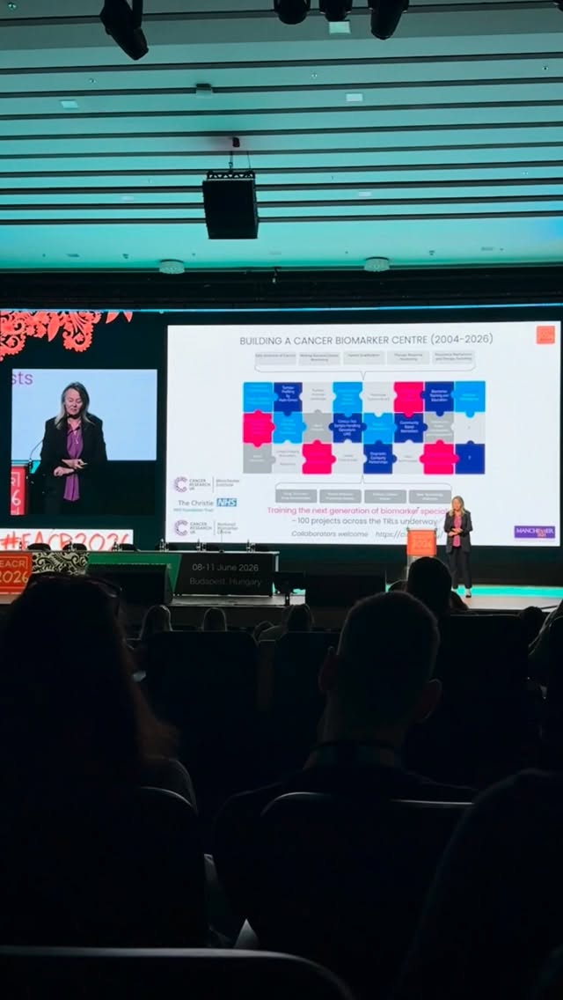
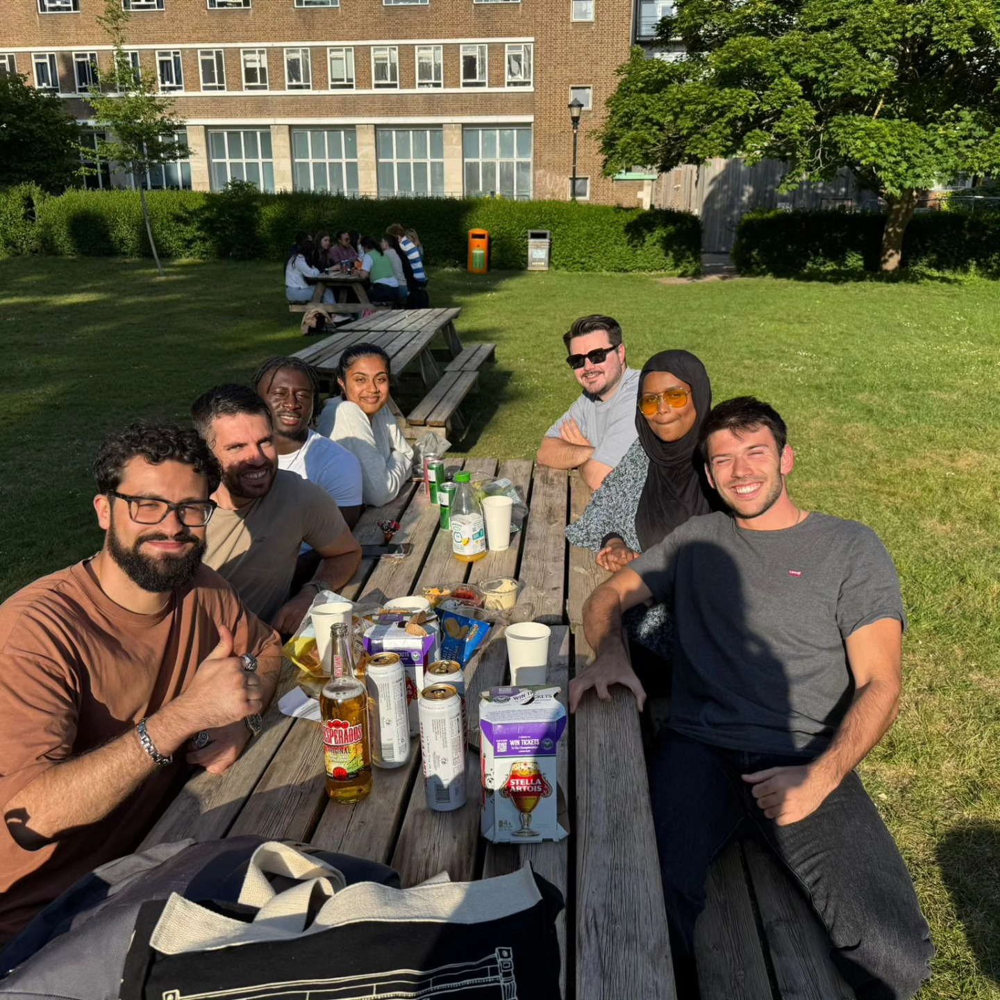
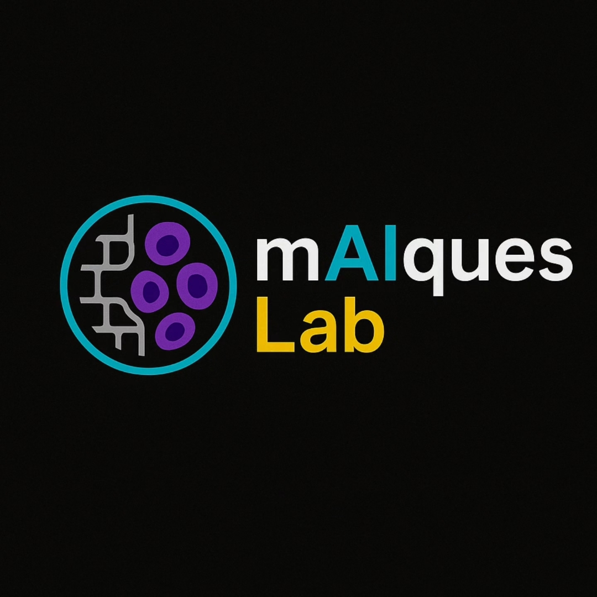

▶ Watch reel· Conferences
Day one at EACR 2026
A glimpse of the European Association for Cancer Research congress, through the lab’s eyes.
Watch on InstagramLab life
The people, visits and shared moments behind our science. Follow our journey, in the lab and beyond.
From our Instagram
Conferences, research visits and the everyday life of our team.

▶ Watch reel· Conferences
A glimpse of the European Association for Cancer Research congress, through the lab’s eyes.
Watch on Instagram
· Research visits
Saying goodbye after a three-month PhD research visit, with plenty of science and good memories to take home.
View on Instagram
· Community
Launching our Instagram: a place to share our research journey, celebrate team science and connect with our community.
View on InstagramStay connected
Find our latest photos, reels and updates on Instagram.